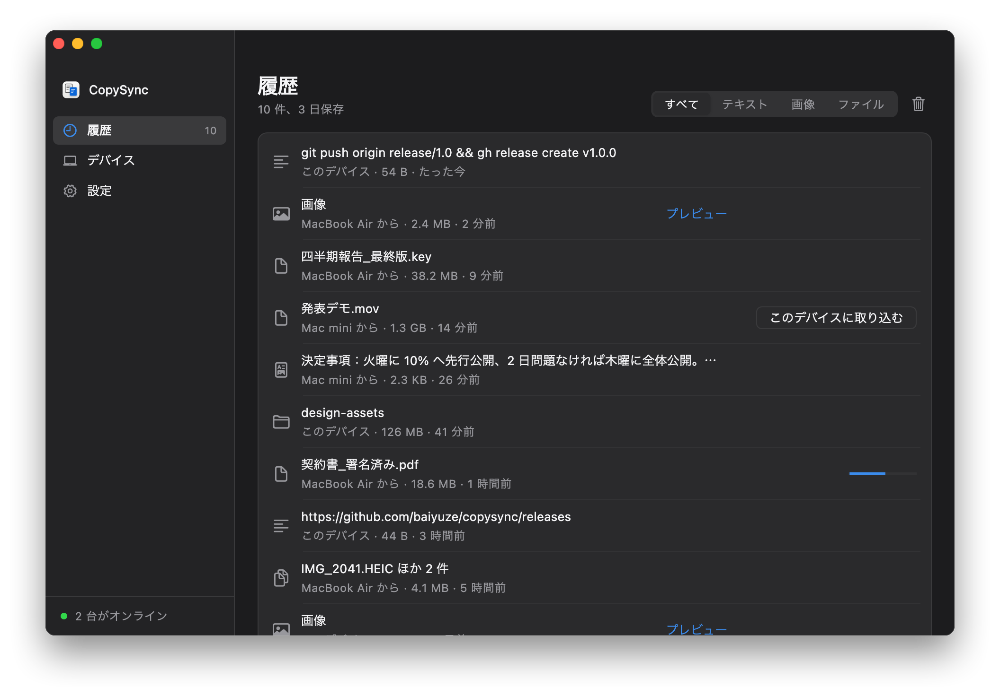
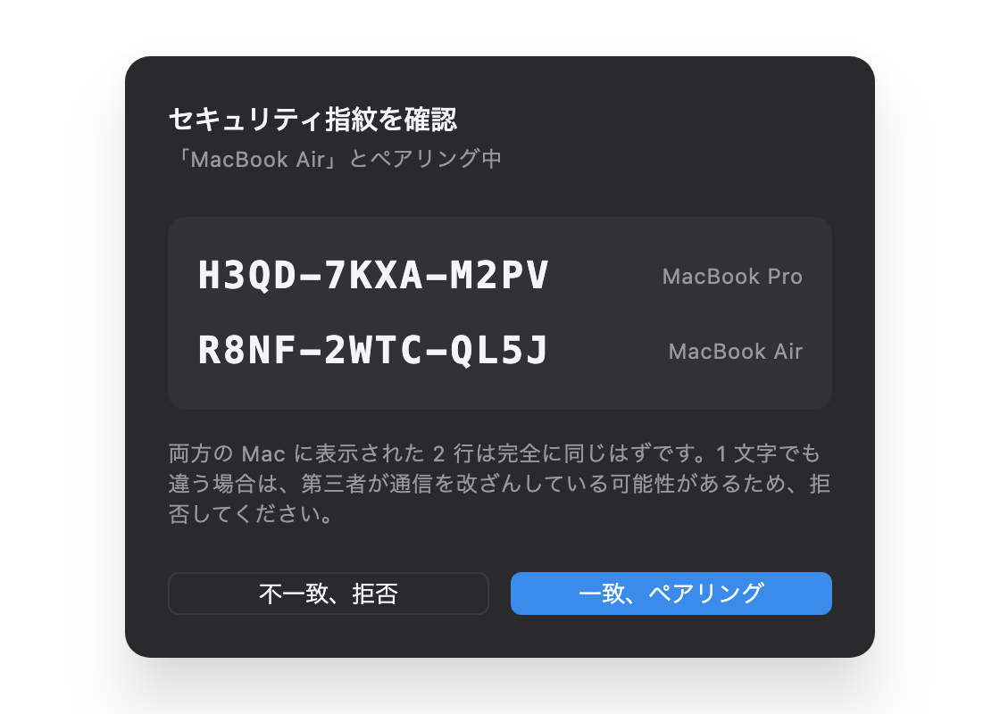

こっちでコピーして、
あっちで貼り付け。
Mac と Windows に対応。テキスト、画像、ファイル、フォルダまるごと。同じアカウントも、同じネットワークも要りません。データはデバイス間を直接流れ、自分のサーバーを経由するときも暗号化されたままです。
バージョン 1.3.0、無料・オープンソース。macOS 13 以降（Intel と Apple シリコン）、Windows 10・11。
どのデバイスでコピーしたものも、ここに
履歴には直近 3 日分が残り、いつでもクリップボードに戻せます。画像はクリックでプレビュー。50 MB までのファイルはコピーした時点で届いていて、それより大きいものは必要なときにワンクリックで取り込めます。

コピーしたあと、何が起きるか
テキストも画像も、ファイルもフォルダも、同じ道を通ります。
気づく
Mac ではバックグラウンドサービスが短い間隔でクリップボードの変更カウントを確認します。カウントと種類を見るだけなので許可は不要で、確認ダイアログも出ません。Windows ではコピーした瞬間にシステムが知らせます。
送る
テキストはメッセージと一緒に送ります。50 MB までの画像とファイルはその場でストリームとして送り、それより大きいファイルは記録だけを送って、必要になったときに転送します。
貼り付ける
受け取った側はまず内容をローカルに保存してから、クリップボードに入れます。⌘V や Ctrl+V で貼り付けられるのは、手元にある本物のファイルです。
いまある方法では足りない理由
ユニバーサルクリップボードは同じ Apple ID で、近くにいる必要があります。AirDrop は毎回受け取り操作が要ります。自分宛てにメッセージで送ると手動でダウンロードすることになり、ファイルは他社のサーバーに残ります。Mac と Windows の組み合わせでは、標準の方法はどれも使えません。
| CopySync | ユニバーサル クリップボード | AirDrop | チャットアプリ | |
|---|---|---|---|---|
| 別々の Apple ID のあいだ | できる | できない | 受け取り操作が必要 | できる |
| Mac と Windows のあいだ | できる | できない | できない | できる |
| 別のネットワーク（自宅と会社） | できる | できない | できない | できる |
| コピーしてすぐ貼り付け、受け取り操作なし | できる | できる | できない | できない |
| ファイルとフォルダまるごと | できる | 不安定 | できる | 先に圧縮 |
| 前にコピーしたものを探す | できる | できない | できない | 履歴をさかのぼる |
| 内容が第三者のサーバーを通らない | 通らない | 通らない | 通らない | 通る |
しくみ
2 台のコンピューターは、暗号化された接続で直接つながります。サーバーの役目はお互いを見つけさせることと、直接つながらないときに中継することだけです。
- WebRTC 直接接続、DTLS 暗号化 データは 2 台のあいだだけを流れる
- あなたのサーバー シグナリング、STUN、TURN 中継
- 中継：直接つながらないときだけ
会社のネットワークでも直接つながる
2 つの回線を持つ会社や、キャリアの NAT アドレスプールのようなネットワークには出口が複数あり、宛先ごとに出口が変わります。一度調べただけでは出口のひとつしか分からず、中継頼みになります。CopySync はすべての出口を調べ、そのアドレスをすべて相手に伝えます。
やっていること
- ポートはひとつ。すべての接続をひとつのローカル UDP ポートで送受信するので、別々のサーバーから得たアドレスがかみ合います。
- 出口をすべて調べる。そのポートから IP の散らばった 7 台のサーバーに同時に問い合わせ、出口の数だけアドレスを得ます。DNS 汚染されたアドレスは先に除外します。
- すべて相手に伝える。相手はひとつずつ試し、実際の出口と合うものがつながります。
- 見た出口を覚えておく。ポートを書き換えない出口を取りこぼしたときは、「出口の IP ＋ローカルポート」で補います。
- どちらが先に送るかを決める。相手のパケットが先に届くとポートをふさいでしまうルーターがあります。片方が先にアドレスを公開し、もう片方はそこへ送ってから自分のアドレスを公開します。再試行では順番を入れ替えます。
- まず中継、あとで直接。最初のハンドシェイクが中継になったら、アイドル時にもう一度穴あけを試み、成功すれば直接接続に切り替えます。
実際のネットワーク構成で検証
NAT 穴あけ実験室では、Linux のネットワーク名前空間と iptables でこれらの構成を組み、CopySync の本物の接続コードをそれぞれで動かします。コミットのたびに自動で実行されます。
| 構成 | 結果 |
|---|---|
| 出口ひとつ ↔ 家庭用ルーター | 直接 |
| 出口ふたつ、旧バージョン（対照） | 中継 |
| 出口ふたつ ↔ 家庭用ルーター | 直接 |
| 出口よっつ ↔ 家庭用ルーター | 直接 |
| 出口ふたつ、2 本目を取りこぼし、履歴なし | 中継 |
| 出口ふたつ、2 本目を取りこぼし、履歴あり | 直接 |
| 出口ふたつ ↔ 出口ふたつ | 直接 |
| 出口ふたつ ↔ ポートをランダムに割り当てる NAT | 中継 |
| 最初はつながらず、あとでネットワークが回復 | 中継のあと直接 |
| 会社のルーターが外からのパケットでポートをふさぐ | 直接 |
| 家庭用ルーターが外からのパケットでポートをふさぐ | 中継のあと、1 回の再試行で直接 |
実測：出口が 4 つある会社の Mac と自宅の Mac は、以前は中継しかできず、サーバーの帯域で 0.6 MB/s に抑えられていました。いまは直接つながり、サーバーに接続してから約 3 秒で確立します。
測定の過程、設計の判断、ハマった点は技術資料（中国語）にまとめています。
サーバーにはコピーした内容が見えない
- サーバーはアカウントも内容も保存しない。デバイスの身元は Ed25519 の鍵で、デバイス ID は公開鍵から計算されます。サーバーはユーザー表なしで身元を確かめられます。
- ペアリングでは指紋をあなたが照合する。両方の画面に同じ 2 行、つまりお互いの公開鍵の指紋が表示されます。サーバーは転送中の公開鍵をすり替えられますが、すり替えれば 2 つの画面が一致しなくなります。この照合が中間者攻撃を防ぐ関門です。
- その後のメッセージはすべて署名付き。サーバーがあなたのデバイスになりすますことはできません。直接接続の証明書もハンドシェイク後にもう一度照合し、食い違えばすぐ切断します。
- 中継も暗号文を転送するだけ。TURN が運ぶのは暗号化済みのパケットです。中継用の認証情報はデバイスごとに発行され、12 時間で失効します。

うまくいかないときに起きること
ネットワークの事情は人それぞれです。ここに挙げたケースはどれも想定済みで、テストがあります。
- 2 台が直接つながらない
- 対称型 NAT や会社のファイアウォールでよく起きます。自動であなたのサーバーの TURN 中継に切り替わり、内容は暗号化されたまま。デバイス一覧には「中継」と表示されます。
- 公開 STUN サーバーにつながらない
- 中国本土などでは公開 STUN が不安定です。サーバーは STUN を内蔵していて、クライアントはそちらを優先します。
- 先に中継でつながった
- 中継のハンドシェイクは速く、直接接続より先に決まることがあります。接続後、接続を始めた側がアイドル時にもう一度穴あけを試み、成功すれば直接接続に切り替えます。転送中は邪魔しません。
- 相手がスリープ、切断、再起動した
- 黙って切れた接続にも気づき、すぐに閉じて再接続します。そのあいだにコピーしたものは記録しておき、つながったら相手の履歴に追加します。相手のいまのクリップボードは上書きしません。
- サーバーとの接続が切れた
- 自動で再接続します。間隔は 1 秒から倍々で最大 30 秒、ランダムな揺らぎ付きで、たくさんのデバイスが一斉に再接続しないようにしています。接続状態はアプリにリアルタイムで表示されます。
- ファイルが大きすぎる
- 上限を超えるものは記録だけを同期し、必要なときに取り込みます。そのとき元のファイルが消えていれば、あいまいな失敗ではなく、はっきりそう伝えます。
- プレーンテキストしか受け付けない場所に貼り付ける
- Web からコピーした書式付きテキストは HTML とプレーンテキストの両方で書き込むので、どこに貼り付けてもタグが混ざりません。
- Windows では使えないファイル名
- Mac では使えるコロンや疑問符などは、対応する全角文字に置き換えて受け取るので、名前はそのまま読めます。大文字と小文字だけが違う 2 つのファイルが上書きし合うこともありません。
- パスワードをコピーした
- Windows ではパスワードマネージャーがコピーした内容に「記録しない」印が付きます。CopySync はそれを見て飛ばします。同期も履歴への保存もしません。
- クリップボードの読み取りをまだ許可していない
- 内容は読みに行きません。読みに行くと、バックグラウンドプロセスが見えないダイアログで止まってしまうからです。アプリが許可を促し、設定へ直接飛べるボタンを出します。
- バックグラウンドサービスが落ちた
- Mac ではシステムの launchd が、Windows では CopySync 自身の監視プロセスが再起動します。10 秒に 1 回までに抑え、暴走はしません。
- アプリを更新した、または移動した
- アプリを開いたときにログイン項目を正しい場所に向け直し、バックグラウンドサービスを新しいバージョンで再起動します。
インストール
それぞれのコンピューターにアプリを入れ、両方からアクセスできるサーバーを 1 台用意します。2 台が同じ LAN にあるなら、サーバーはどちらかの Mac で動かせば十分です。
Mac
- CopySync.dmg をダウンロードして開き、CopySync を「アプリケーション」にドラッグします。
- 「アプリケーション」から開きます。初回は「開発元を検証できません」と表示されます。CopySync はまだ Apple の公証を受けていないためです。「システム設定 → プライバシーとセキュリティ」を開き、ページ下部の「このまま開く」をクリックします。必要なのは一度だけです。
- 「バックグラウンド同期を有効にする」をクリックし、「設定」でサーバーのアドレス
ws://サーバーアドレス:8787/signalを入力して Return を押します。 - クリップボードの読み取りを許可するか聞かれたら、許可します。
Windows
- CopySync-Setup.exe を実行します。現在のユーザーのフォルダにインストールされ、管理者権限は要りません。CopySync はまだコード署名されていないため、「Windows によって PC が保護されました」と表示されます。「詳細情報」を押してから「実行」を押してください。インストーラーを使いたくない場合はポータブル版もあります。
- CopySync を開き、「バックグラウンド同期を有効にする」をクリックします。ウィンドウを閉じても、画面右下の通知領域で動き続けます。
- 「設定」でサーバーのアドレスを入力して Enter を押します。ファイアウォールに聞かれたら許可します。
サーバー
Linux なら何でも可、root 権限が必要です。ARM の場合は amd64 を arm64 に置き換えます。
curl -LO https://github.com/baiyuze/copysync/releases/latest/download/copysync-server-linux-amd64.tar.gz
tar xzf copysync-server-linux-amd64.tar.gz
cd copysync-server-linux-amd64
sudo ./install.sh グローバルIPスクリプトは起動時に立ち上がる systemd サービスを登録し、最後にアプリへ入力するアドレスを表示します。ファイアウォールやセキュリティグループで次のポートを開けてください。
| ポート | 用途 |
|---|---|
| 8787/tcp | シグナリング |
| 3478/udp | STUN と TURN |
| 32768–60999/udp | 中継用ポート |
Docker でも動かせます。サーバーの構築手順（英語）をご覧ください。
ペアリング：一台で「デバイス → デバイスを追加」を開いて 6 桁のコードを表示し、もう一台で入力します。両方の画面に同じ 2 行の指紋が表示されたら確定します。Mac と Windows、Windows 同士でも同じ手順です。
仕様
| バージョン | 1.3.0（公開） |
|---|---|
| Mac アプリ | macOS 13 Ventura 以降。Intel と Apple シリコンのユニバーサルバイナリで Rosetta 不要。ダウンロードは約 47 MB |
| Windows アプリ | Windows 10（21H2 以降）と Windows 11、x64。ユーザーごとのインストールで管理者権限不要。ダウンロードは約 23 MB |
| サーバー | Linux（x86_64 または ARM64、systemd または Docker）、macOS でも動作。メモリは約 15 MB |
| 表示言語 | 日本語、英語、簡体字中国語。初期設定はシステムに合わせ、「設定」で切り替え可能 |
| 同期する内容 | プレーンテキスト、書式付きテキスト、画像とスクリーンショット、ファイル、フォルダ。種類ごとにオフにできる |
| 転送 | WebRTC データチャネル。直接接続を優先し、つながらなければ TURN で中継。複数の出口があるネットワークでは出口ごとに調査。ファイルは tar + zstd でストリーム転送 |
| 暗号化と身元 | DTLS によるエンドツーエンド暗号化。デバイスの身元は Ed25519 の鍵。シグナリングのメッセージはすべて署名付き |
| ペアリング | 5 分間有効な 6 桁のコード。0/O や 1/I のような紛らわしい文字は使わない。指紋は人が照合 |
| 自動同期の上限 | 初期値 50 MB、1 MB〜1 GB で調整可能 |
| 履歴の保存期間 | 初期値 3 日、1 時間〜30 日で調整可能。期限が来たら自動で削除 |
| 実測の速度 | LAN の直接接続で 20 MB のファイルを約 330 ミリ秒で転送、チェックサム一致 |
| 技術スタック | バックグラウンドサービスとサーバーは Go（Windows では Go から Win32 を直接呼び出し）、アプリは Flutter（Mac と Windows で同じコード）、メッセージ定義は Protocol Buffers |
| ライセンス | GNU AGPL-3.0。クローズドソースでの利用などには商用ライセンスを用意 |
よくある質問
macOS のユニバーサルクリップボードとの違いは？
ユニバーサルクリップボードは、両方のデバイスが同じ Apple ID でサインインし、Bluetooth と Wi‑Fi をオンにして近くにある必要があり、Apple 製品どうしでしか使えません。CopySync に必要なのは、両方のコンピューターがあなたのサーバーにつながることだけです。Apple ID が別でも、自宅と会社に離れていても、Mac と Windows の組み合わせでも使えます。さらに履歴があり、大きなファイルは必要なときに取り込めます。
2 台の Mac が同じ Apple ID でいつも並んでいて、主にテキストをコピーするだけなら、標準機能で十分です。
サーバーにコピーした内容は見えますか？
見えません。直接接続のときデータはサーバーを通りません。中継が必要なときも、サーバーが転送するのは DTLS で暗号化されたパケットです。サーバーはアカウントもコピーした内容も保存しません。コードは公開されているので、ご自身で確かめられます。
出口が複数ある会社のネットワークでも直接つながりますか？
つながります。こうしたネットワークは宛先ごとに出口を選びます。CopySync はひとつのポートから複数のサーバーに問い合わせて出口ごとのアドレスを集め、すべて相手に送り、相手がひとつずつ試します。テストでは、出口が 4 つある会社の Mac と家庭の回線が直接つながりました。相手がポートをランダムに割り当てる NAT の場合は中継になります。
サーバーは自分で用意する必要がありますか？
はい。CopySync は公開サーバーを提供しません。だから誰のデータも他人のマシンを通りません。2 台が同じ LAN にあるならどちらかの Mac でサーバーを動かせば十分で、ネットワークをまたぐ場合はグローバル IP を持つサーバーが 1 台必要です。最小構成のクラウドサーバーで足ります。
Windows に対応していますか？iPhone は？
Windows 10 と Windows 11（x64）に対応し、Mac と相互に使えます。Windows で貼り付けたファイルは本物のファイルなので、エクスプローラーや Office にそのまま貼り付けられます。
iPhone と iPad には対応していません。iOS ではアプリがバックグラウンドでクリップボードを監視できないため、コピーしてすぐ同期することができないからです。
初めて開くときにシステムに止められるのはなぜ？
CopySync はまだ Apple の公証を受けておらず、Windows 版もコード署名していません。どちらも毎年費用のかかる証明書が必要です。
Mac では「システム設定 → プライバシーとセキュリティ」でページ下部の「このまま開く」をクリック、Windows では「Windows によって PC が保護されました」で「詳細情報」から「実行」を押してください。どちらも一度だけで済みます。
大きなファイルはどうなりますか？
初期設定では 50 MB までのものはコピーした時点でもう一台に送られ、そのまま貼り付けられます。それより大きいファイルは記録だけを同期し、必要なときに履歴から「このデバイスに取り込む」で転送します。上限は「設定」で変えられます。
無料ですか？会社で使えますか？
無料です。CopySync は GNU AGPL-3.0 のオープンソースで、個人も会社も無料で使い、改変できます。配布する場合や、改変したものをネットワーク越しに提供する場合は、同じライセンスでソースコードを公開する必要があります。
クローズドソースの製品に組み込む、改変を公開したくない、ホスティングサービスとして運用する、といった場合は商用ライセンスをご利用ください。
2 台のコンピューター、
ひとつのクリップボード。
バージョン 1.3.0、無料・オープンソース。macOS 13 以降（Intel と Apple シリコン）、Windows 10・11。
GitHub でソースコードを見る